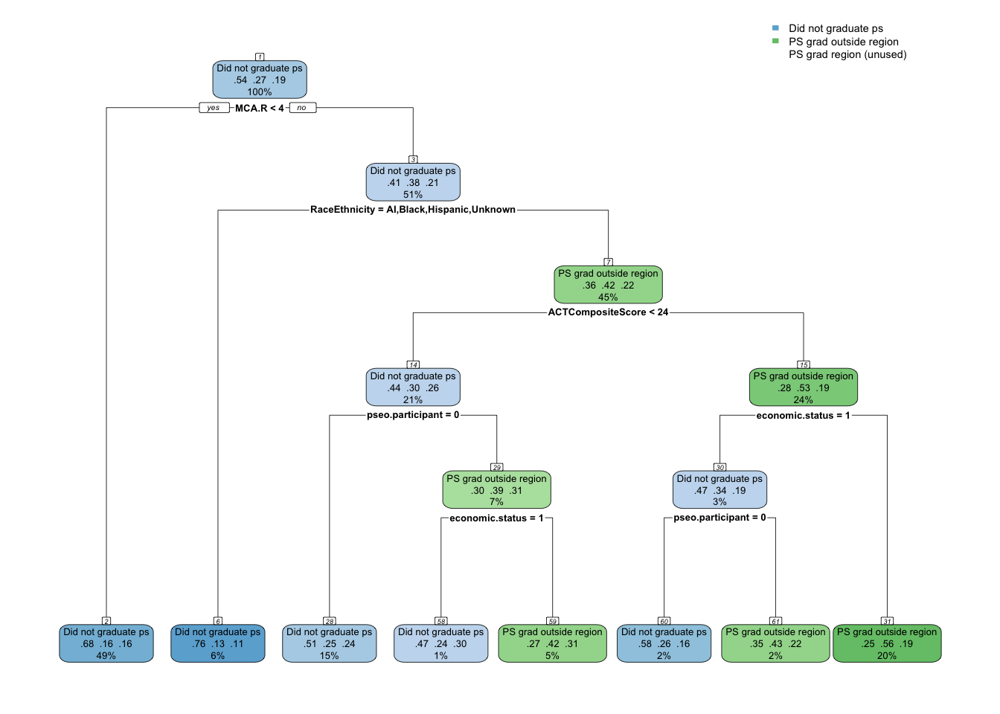
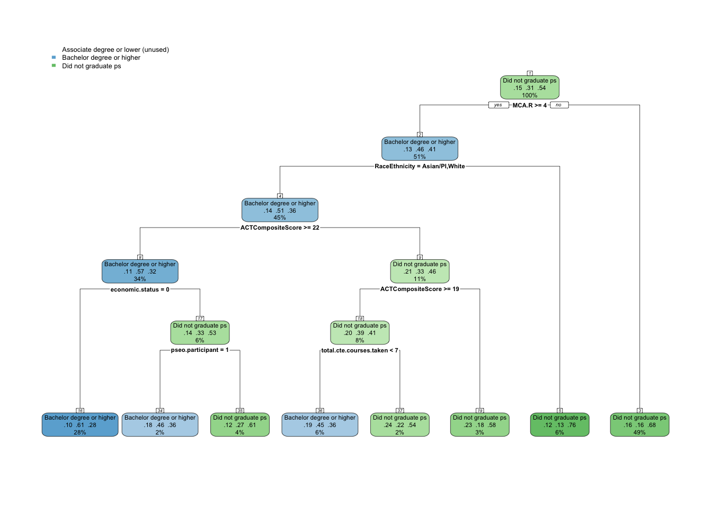

The previous analyses established two central findings. First, postsecondary experiences are the strongest predictors of long-term employment outcomes in Southern Minnesota. Where students graduate, whether they complete, the type of institution, and the level of credential earned all consistently shape whether they find meaningful regional employment, move elsewhere, or become disconnected. Second, these postsecondary outcomes are not random; they are strongly conditioned by demographic background, high school context, and student accomplishments. In other words, the very pathways that most influence employment are themselves patterned by earlier characteristics.
Taken together, this creates a dual-pipeline system. On one side, CTE engagement, 2-year institutions, and sub-baccalaureate completions anchor students to the regional workforce, disproportionately drawing from low-income, special education, and rural backgrounds. On the other side, academic rigor and 4-year+ pathways open doors to mobility, with higher-scoring and advantaged students more likely to pursue degrees outside the region and build careers beyond Southern Minnesota.
This new stage of analysis turns from relationships to prediction.
master <- master.original %>%mutate(ps.grad.location.new =ifelse(ps.grad.location %in%c("PS grad MN", "PS grad outside MN"), "PS grad outside region", as.character(ps.grad.location)),highest.cred.level.new =ifelse(highest.cred.level %in%c("Associate degree", "Less than Associate Degree"), "Associate degree or lower", as.character(highest.cred.level)),highest.cred.level.new =ifelse(highest.cred.level.new %in%c("No college", "Some college"), "Did not graduate ps", as.character(highest.cred.level.new)))kable(names(master))
Provides a direct lens into how educational attainment maps onto workforce outcomes.
Crucial for policy since it reveals the “tipping point” between staying and leaving.
ps.grad.InstitutionSector
Distinguishes public 2-year vs. 4-year pathways.
Important because 2-year grads disproportionately fuel the regional workforce, while 4-year grads drive mobility.
Adds nuance to the credential level analysis.
ps.grad
Foundational but broad: simply shows completion vs. non-completion.
Powerful predictor of avoiding disconnection, but less detailed than the other three.
Best treated as a baseline lens that underpins the others.
For this, I’m going to use the first two.
Dependent Variable Recoding for CART Analysis
To improve interpretability of the CART results, the original postsecondary outcome variables were recoded into fewer, conceptually meaningful categories. This ensures the models capture the key distinctions that matter most for workforce pathways without being diluted by overly granular categories.
Excluded Attending PS to focus on completed vs. non-completed pathways.
Collapsed PS grad MN and PS grad outside MN into a single category: PS grad outside region.
Final categories:
PS grad region → Graduated from a postsecondary institution in Southern MN.
PS grad outside region → Graduated from a postsecondary institution elsewhere in Minnesota or outside the state.
Did not graduate PS → Enrolled but did not complete a postsecondary credential.
Rationale: This structure highlights the most important distinction for regional employment outcomes: whether graduates complete within Southern MN (anchoring them locally), outside the region (driving mobility), or not at all (linked to disconnection).
2. Highest Credential Earned (highest.cred.level)
Original categories:
No college
Some college
Less than associate degree
Associate degree
Bachelor’s degree or higher
Recoding approach:
Collapsed No college and Some college into Did not graduate PS, representing students without a credential.
Collapsed Less than associate degree and Associate degree into Associate degree or less, representing sub-baccalaureate completions.
Final categories:
Did not graduate PS → No formal credential earned.
Associate degree or less → Includes certificates, diplomas, and associate degrees.
Bachelor degree or higher → Represents advanced educational attainment.
Rationale: This grouping emphasizes the stepwise distinction between non-completion, sub-baccalaureate pathways (most tied to regional employment), and bachelor’s+ pathways (more strongly tied to statewide or out-of-state mobility).
Independent Variables
1. Demographics
Economic status → Strong predictor of both PS enrollment/completion and employment outcomes. Low-income students are key to understanding regional pathways.
SpecialEdStatus → Consistent barrier in both PS and employment; heavily represented in regional pathways.
RaceEthnicity → Persistent gaps in access, completion, and location of graduation. Helps explain inequities in both mobility and retention.
Gender → Early postsecondary enrollment and employment differences; useful for modeling even if gaps narrow later.
2. High School Characteristics
Dem_Desc (Rural vs. Metro) → Strong link to regional attachment; rural students more likely to stay, metro more mobile/disconnected.
avg.unemp.rate → Local economic conditions influence both PS location and employment stability.
avg.wage.pct.state → Higher local wages reduce disconnection and can anchor students regionally.
3. High School Accomplishments
CTE achievement → Most consistent school-based predictor of regional employment and 2-year PS pathways.
ACTCompositeScore → Strong signal of academic rigor; predicts 4-year+ pathways and mobility.
MCA Math, Reading, Science → Reinforce academic readiness dimension; lower scores tied to regional 2-year pathways, higher scores to mobility.
PSEO participation → Clear driver of 4-year+ completions and out-of-region graduation.
De-prioritize / Drop
English learner / LEP / non-English home → Weak long-term signals; redundant.
sat.taken and took.ACT → Minimal discriminatory value; not useful for prediction.
ap.exam → Overlaps with ACT/MCA and PSEO; weaker independent effect.
Methodology
This analysis used classification and regression trees (CART) to explore the predictive power of demographic, high school context, and accomplishment variables on postsecondary pathways. CART was selected because it:
Handles both categorical and continuous predictors without requiring transformation.
Naturally models nonlinear relationships and interactions between variables.
Produces results that are highly interpretable, with decision rules that can be directly linked back to student pathways.
For each postsecondary dependent variable, the analysis followed a consistent three-step process:
Distribution Analysis
Calculated and visualized the distribution of cases across the recoded categories for each dependent variable.
Established baseline context and highlighted whether any categories were sparsely populated.
Model Estimation
Estimated three CART models for each dependent variable:
Base model: A fully grown tree without pruning, providing the maximum possible fit and revealing the most detailed set of splits.
Pre-pruned model: A tree constrained during growth (e.g., limiting maximum depth or minimum split size) to prevent overfitting and to enhance generalizability.
Post-pruned model: A tree first grown to full size, then pruned back using the complexity parameter (CP) and cross-validation results to balance fit and simplicity.
Model Selection
Compared the three models based on cross-validated classification accuracy, error rates, and interpretability.
Final model choice prioritized predictive strength while also ensuring clarity and parsimony—favoring simpler trees when they performed comparably to more complex ones.
This procedure ensured that the final CART models both maximized predictive accuracy and yielded interpretable insights into how student background and high school experiences influence postsecondary pathways most strongly tied to regional workforce outcomes.
The table below shows that 54% of the individuals did not graduate college, 27% graduated outside their high school region, and only 19% graduated from a college within their region.
ps.grad.location <- data %>%select(-highest.cred.level.new) %>%filter(ps.grad.location.new !="Attending ps") %>%mutate(ps.grad.location.new =as.factor(ps.grad.location.new))comma(nrow(ps.grad.location))
I know the base model is going to overfit and provide an overly complex tree due to having a cost penalty of 0. So I’m just going to print the complexity plot in order to see what the appropriate CP would be to minimize xerror.
Next, we need to prune. We can either pre-prune or post-prune. We will start with pre-pruning and use each method - max depth, min depth, and min bucket. It’s recommended that I start with the following parameters;
The post-pruned model is the same as athe pre-pruned’s. I will use the pre-pruned model.
#Plot treerpart.plot(ps.grad.location.model.preprune, nn =TRUE)

Main Takeaway
Model Performance
The pre-pruned tree achieved 61.7% accuracy with a root node error of 45.8%. This represents a meaningful improvement over the baseline distribution (where 54.2% of students did not graduate PS) and shows that a relatively small set of predictors can explain important variation in postsecondary graduation location.
Key Predictors
The most influential predictors retained after pruning were:
MCA Reading (MCA.R)
ACT Composite Score
Economic Status
PSEO Participation
Race/Ethnicity
Interpretation of Tree Structure
Regional postsecondary graduation was most strongly tied to moderate academic readiness combined with economic disadvantage. Students with mid-range ACT scores (≥24) and low-income backgrounds were more likely to complete in the region rather than outside of it. This highlights how regional institutions serve as a key pathway for disadvantaged but academically prepared students.
Conversely, students with low MCA Reading scores (<4) or low ACT scores (<24) were far more likely to not graduate at all, underscoring the role of academic preparation in determining access to completion. Among students with stronger academic scores, PSEO participation and advantaged economic status pushed them toward completion outside the region, reflecting the mobility pipeline.
Summary
The CART model indicates that regional completions cluster among students who combine modest academic readiness with economic disadvantage, whereas high scorers and PSEO participants overwhelmingly complete outside the region. The strongest barrier remains low academic readiness, which is heavily associated with not graduating from postsecondary at all.
Policy Implications
These findings reinforce that Southern MN’s workforce stability depends on regional postsecondary institutions’ ability to serve low-income students with mid-level academic preparation. Strengthening supports for these students — such as developmental coursework, wraparound advising, and affordability measures — can improve completion rates and sustain the regional workforce. At the same time, retaining high-achieving students will require new strategies to connect PSEO participants and bachelor’s-bound students back to local opportunities, since they are most likely to complete outside the region and enter mobility pathways.
Analysis - Highest Credential Earned
The table below shows that 54% of the individuals did not graduate college, 31% graduated with a Bachelor degree or higher, and 15% graduated with an Associate degree or lower.
highest.cred.level <- data %>%select(-ps.grad.location.new) %>%filter(highest.cred.level.new !="Attending ps") %>%mutate(highest.cred.level.new =as.factor(highest.cred.level.new))comma(nrow(highest.cred.level))
I know the base model is going to overfit and provide an overly complex tree due to having a cost penalty of 0. So I’m just going to print the complexity plot in order to see what the appropriate CP would be to minimize xerror.
Next, we need to prune. We can either pre-prune or post-prune. We will start with pre-pruning and use each method - max depth, min depth, and min bucket. It’s recommended that I start with the following parameters;
The post-pruned model is the same as the pre-pruned’s. I will use the pre-pruned model.
#Plot treerpart.plot(highest.cred.level.model.preprune, nn =TRUE)

Main Takeaway
Model Performance
The pre-pruned tree achieved 64.2% accuracy with a root node error of 45.9%. Compared to the baseline distribution (where over half of students did not graduate postsecondary), the model provides a meaningful improvement in classification and highlights the central role of academic readiness and background factors in determining highest credential earned.
Key Predictors
The most influential predictors retained after pruning were:
MCA Reading (MCA.R)
ACT Composite Score
Economic Status
PSEO Participation
Race/Ethnicity
Total CTE Courses Taken
Interpretation of Tree Structure
Earning a bachelor’s degree or higher was most strongly associated with higher MCA Reading scores (≥4) and ACT Composite scores (≥22), particularly for White and Asian/PI students. Within this group, advantaged students and those who participated in PSEO were especially likely to complete at the bachelor’s level or above.
By contrast, students with low MCA Reading scores or ACT scores below 19 were overwhelmingly likely to not graduate postsecondary, regardless of other characteristics. Even among students with moderate ACT performance, fewer CTE courses was a marker of higher non-completion risk.
Notably, economic disadvantage tempered bachelor’s attainment. High scorers who were also low-income were less likely to reach a bachelor’s or higher compared to their more advantaged peers, highlighting persistent inequities in access to advanced credentials.
Summary
The CART model shows that academic readiness is the primary gateway to bachelor’s and higher attainment, while low academic performance almost guarantees non-completion. CTE engagement, while generally positive for regional workforce outcomes, was not as strong a driver toward higher credentials—underscoring its role in anchoring students to sub-baccalaureate pathways. Meanwhile, race/ethnicity and economic status continue to stratify opportunities, even among academically prepared students.
Policy Implications
Strengthening Southern MN’s workforce requires a dual focus:
Bolster completion among moderate scorers and disadvantaged students by expanding academic supports, affordability measures, and targeted advising to reduce non-completion.
Improve equity at the bachelor’s+ level by ensuring that high-achieving, low-income, and underrepresented minority students have the resources and pathways to reach advanced credentials.
Leverage CTE as a stabilizer, but pair it with stackable credential opportunities so students anchored locally are not limited to sub-associate outcomes.
In short, academic readiness remains the strongest predictor of highest credential level, but without targeted interventions, structural inequities in race and economic status continue to limit who attains bachelor’s and higher degrees.
Grand Synthesis: Predictive Elements of Postsecondary Pathways
Overall Model Performance
Across both dependent variables — postsecondary graduation location and highest credential earned — the pre-pruned CART models achieved accuracies of 61.7% and 64.2%, respectively. Both represented clear improvements over baseline distributions and showed that a relatively small set of predictors consistently explains meaningful variation in student pathways.
While not capturing all individual-level complexity, these models highlight distinct sets of academic, demographic, and experiential variables that shape whether students remain anchored in the Southern MN workforce pipeline or pursue mobility pathways.
Key Predictors Across Models
The following predictors emerged as the most consistently influential:
Academic readiness: MCA Reading and ACT Composite Score.
Economic status: Persistent disadvantages for low-income students.
Race/Ethnicity: White and Asian/PI students more likely to reach higher credentials; Black, AI, and Hispanic students more often concentrated in lower or incomplete outcomes.
PSEO participation: Steers students toward bachelor’s+ and out-of-region completions.
CTE engagement (courses taken): Reinforces regional and sub-baccalaureate pathways.
These predictors operate in two clear pipelines — one driving local attachment through sub-baccalaureate credentials, and one fostering mobility through advanced credentials.
Interpretation of Pathways
1. Graduation Location (ps.grad.location)
Regional completions clustered among economically disadvantaged students with moderate academic readiness.
Non-completion was strongly tied to low ACT and MCA scores, often regardless of background.
High academic readiness and PSEO participation predicted completions outside the region, fueling mobility pathways.
Implication: Regional institutions disproportionately serve disadvantaged students who achieve moderate readiness, while high scorers leave the region for completion.
2. Highest Credential Earned (highest.cred.level)
Bachelor’s or higher credentials were most strongly linked to high MCA and ACT scores, advantaged status, and PSEO participation.
Non-completion was almost guaranteed for students with low MCA Reading or ACT scores, even when other factors were favorable.
Associate or lower credentials (though less prominent in the tree structure) align with CTE-heavy pathways, serving as stabilizers for the regional workforce.
Implication: Academic readiness acts as the primary gateway to bachelor’s+ attainment, but economic and racial inequities remain barriers, even among high scorers.
Synthesis of Findings
Together, the models reinforce the existence of a dual-pipeline system in Southern Minnesota:
Regional Workforce Pipeline
Driven by CTE engagement, associate-or-lower credentials, and regional completions.
Anchors students with economic disadvantage and moderate readiness into the local labor market.
Provides workforce stability but limits long-term mobility and earning potential.
Mobility Pipeline
Driven by academic rigor, bachelor’s+ attainment, PSEO participation, and out-of-region completions.
Attracts advantaged, high-scoring students, who are least likely to remain in the region after completion.
Fuels statewide and out-of-state labor markets more than the local workforce.
Policy Implications
Strengthen regional anchors: Expand academic and financial supports for disadvantaged, moderate scorers to ensure successful completions in Southern MN institutions.
Address inequities in bachelor’s+ attainment: Target resources for high-achieving but low-income and underrepresented students to reduce barriers to advanced credentials.
Leverage CTE strategically: Maintain CTE as a stabilizer but ensure stackable pathways to prevent students from being locked into sub-associate outcomes.
Engage high-achievers locally: Create incentives and career opportunities that connect PSEO participants and bachelor’s+ completers back to the region to mitigate brain drain.
Conclusion
The predictive analysis confirms that academic readiness, economic status, and experiential factors like PSEO and CTE are the primary levers shaping postsecondary pathways. These pathways, in turn, determine whether students are most likely to remain in the Southern MN workforce or pursue mobility.
Ultimately, the models illustrate a structural duality: disadvantaged students with modest preparation form the backbone of the regional workforce through 2-year and regional completions, while advantaged high scorers are systematically funneled into statewide mobility. Policy efforts must therefore balance supporting the regional anchor pipeline with developing mechanisms to retain or re-engage mobile students after higher attainment.